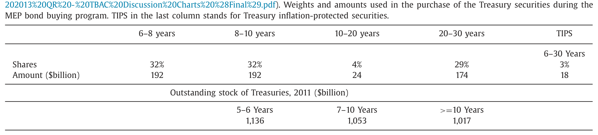
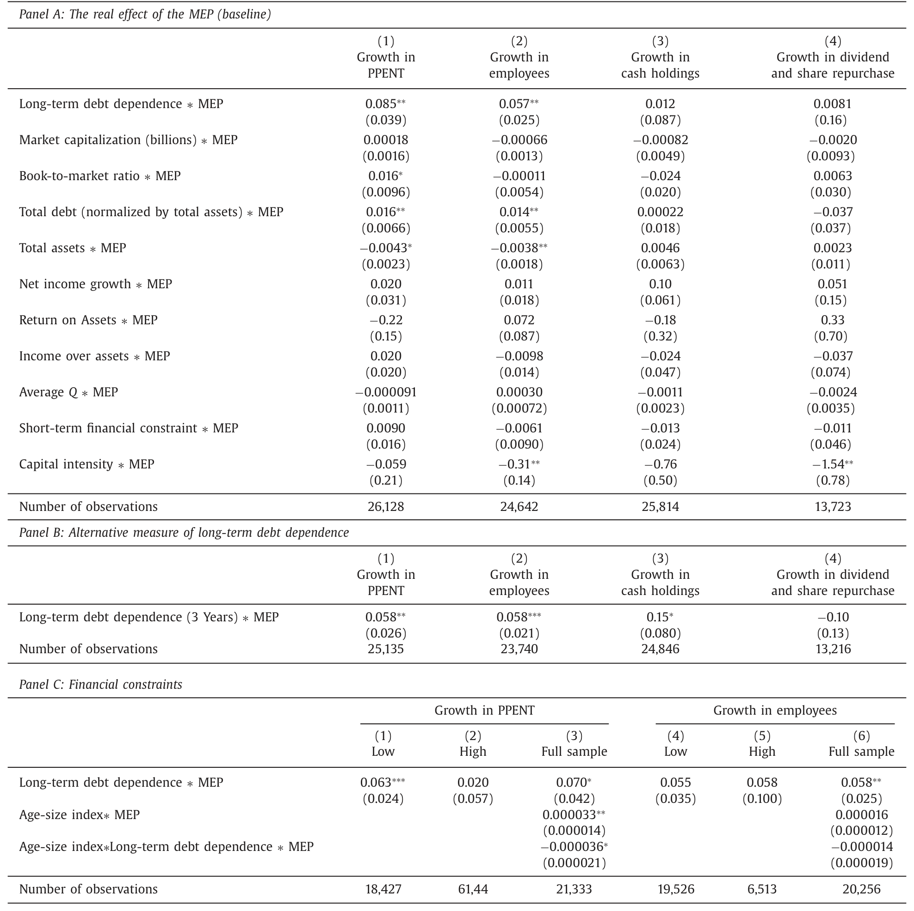
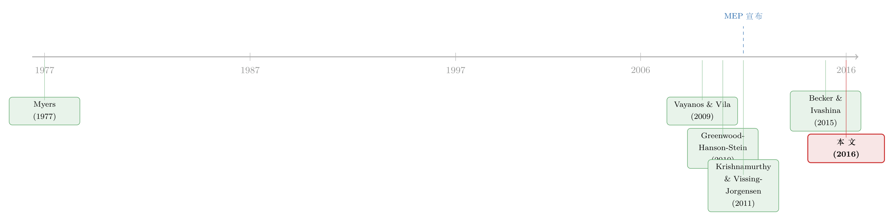

央行不买公司债，公司却替它「补了货」——一次拉平收益率曲线的自然实验
本文读的是 Foley-Fisher, Ramcharan & Yu (2016, Journal of Financial Economics)：美联储 2011 年的「期限扩展计划」(MEP) 只买卖国债、从不碰公司债，却让那些更依赖长期债务的非金融企业在宣告日股价大涨、随后多发长债、并扩张了就业与投资——一条绕过零利率下限、靠「填补供给缺口」起作用的货币政策暗线。
1 一个奇怪的问题：央行明明没买你的债
先看一个表面上不合常理的现象。
2011 年 9 月 21 日下午 2:23，美联储宣布了所谓的 期限扩展计划 (maturity extension program, MEP)：卖出约 $400 billion 的短期国债，把回笼的钱去买等量的长期国债，目的只有一个——压平收益率曲线，把长端利率往下摁。注意，这里头没有一分钱流向公司债。整个操作是在国债市场内部「换仓」。
可吊诡的是，第二天股票市场一开盘，一批公司的股价就明显跑赢了大盘。而这批公司有一个共同特征：它们平时更依赖长期债务融资。央行没买它们的债，市场却抢着买它们的股票。
这就是本文要讲的故事的起点。一个自然的问题是：一个只在国债市场里腾挪、对公司债避而不碰的政策，凭什么能精确地、有差别地影响到不同企业的股价、发债行为，乃至真实的招人和买设备？
要回答它，得先理解一个常被教科书一笔带过的机制：缺口填补 (gap-filling)。
2 缺口填补：谁来接住消失的长债供给
故事的理论底座是债券市场的部分分割 (partial segmentation) 与有限套利 (limits to arbitrage)——Vayanos and Vila (2009) 的 期限偏好 (preferred habitat) 模型，以及 Greenwood, Hanson, and Stein (2010) 的缺口填补理论。
逻辑是这样的。债券市场上有一批「天然买家」对久期是挑食的：寿险公司为了匹配它那一长串远期负债，主要买长债——文中提到寿险业持有公司债的平均久期常年维持在约 11 年。当这些买家的需求对期限缺乏弹性，而能在不同期限间自由搬运资金的套利者又资本有限、或风险厌恶时，期望假说 (expectations hypothesis) 就只能被「半吊子」地执行：收益率会偏离它本应有的水平。
接着，一个关键推论出现了。当政府突然抽走大量长期国债供给（这正是 MEP 干的事），长端就出现了一个「缺口」。谁来填？Greenwood, Hanson, and Stein (2010) 的答案是：非金融企业。既然长债变贵了、好卖了，那些本就偏好长期负债、或有财务灵活性去调整发债期限的公司，就会顺势多发长债，把这个缺口补上——就像央行抽走的货架被企业自己的商品重新摆满。
MEP 的「缺口」有多大？如表 1 所示，对于久期八年以上的国债，MEP 计划购买量约相当于 2011 年底存量的 18%。这不是一个能被套利者轻松抹平的小扰动。

Table 1
于是 MEP 就成了一个近乎完美的自然实验 (natural experiment)。和 QE1 那种在 2008 年金融海啸最深处、伴随着恐慌抛售与火线甩卖推出的政策不同，MEP 出台时市场相对平静、有明确的实施期、且把火力专门对准了收益率曲线的斜率。这让作者得以把「期限结构变动」这一条线索，从一堆同时发生的宏观噪声里干净地拎出来。
（这条「央行不碰你的债、你却替它发了债」的资本结构暗线，在另一篇研究里被讲得更透，可参见《央行没买你的债，你却也跟着发了债》。）
3 识别策略：把「依赖长债」当成连续的处理强度
明白了机制，识别就顺理成章了。本文的核心思路是：如果市场相信分割与有限套利，那么 MEP 的好处应当不成比例地落在那些「最偏好发长债」的公司身上。于是「长期债务依赖度」就成了一根天然的标尺——它不是非黑即白的处理/对照，而是一个连续的「处理强度」。
作者用了两套互补的设计。
第一套是事件研究 (event study)。 围绕 9 月 21 日的宣告，看横截面上不同企业的异常收益 (abnormal return) 如何随其长债依赖度而变。这里的识别力来自于时间的精确：MEP 是在某一分钟被宣布的，而企业的债务期限结构是事前就定下的，二者之间很难有反向因果。作者甚至用了日内 (intraday) 高频数据来夯实这一点。
第二套是双重差分 (difference-in-differences, DiD)。 比较 MEP 实施期 vs. 其他时期、长债依赖度高 vs. 低的公司，在发债、就业、投资上的差异。核心系数挂在交互项 MEP_t × LongTermDebt_i 上。为了压住内生性，作者做了两件事值得一提：
- 把所有控制变量都取截至 2007 年的历史均值，避免危机本身在处理变量和结果之间制造虚假关联；
- 用 Rauh and Sufi (2010) 那种更细的债务期限代理，缓解公共数据库「只能粗略刻画期限结构」的测量误差。
作者自己很坦诚地点出了识别的软肋：按 Myers (1977) 的期限匹配逻辑，发长债的公司往往也运营长寿命资产，那么收益率曲线变动可能通过资产端的现金流独立地影响企业价值，而不全是「外部融资约束被放松」这条渠道。换言之，处理变量「长债依赖度」本身是内生的。这也是作者反复强调「要结合多个测试、而非单看一个系数」的原因。（关于「期限匹配」这条暗线本身，可参见《飞机要换，债也要换》。）
4 数据与主要结果：从股价一路打到工厂车间
数据层面，作者把 Compustat 的企业财务、CRSP 的股价、债券层面的发行与利差数据拼在一起，覆盖 MEP 前后。下面是三个层层递进的核心结果。
第一击，股价。 宣告次日，长债依赖度越高的公司，异常收益越高。量级是：长期债务比率每提高一个标准差，宣告次日的异常收益高出 0.26 个百分点——换算成年化约 93%。这个结果对各种控制都稳健，用日内数据也站得住。市场在用真金白银投票：它预期 MEP 会不成比例地放松这批公司的融资约束。
值得一提的是收益率曲线那一端的配合：30 年期国债收益率仅 9 月 22 日一天就跌了 25 个基点（相当于两个标准差的变动），两天累计跌了 42 个基点。市场的反应和 MEP 的「压平曲线」意图高度一致。
第二击，发债。 用 DiD 看，长期债务比率每提高一个标准差，MEP 实施期内长债存量的增速快约 8%。而作为证伪检验 (falsification test)，同一个回归里短债增长的系数不显著——这给了我们信心：效应确实是通过长端借款在起作用，而不是企业泛泛地多借钱。这正是缺口填补理论预测的样子，也和 Badoer and James (2016) 关于国债供给冲击驱动企业长债发行的证据一脉相承。
第三击，真实经济活动。 最关键的一步，是看这些钱有没有变成工作岗位和机器。答案是肯定的：长债依赖度每提高一个标准差，MEP 期间的就业增速高出 1.4 个百分点，厂房设备 (plant & equipment) 支出的增速也有类似量级的提升。而且这种效应主要集中在财务约束较轻的公司身上——用 Hadlock and Pierce (2010) 的年龄-规模指数衡量，那些更不受约束、更有「财务灵活性」去调整发债计划的公司，响应最强。

Table 8
这是一个有点反直觉、却很有道理的反转：最受益于这条货币政策渠道的，恰恰是那些本来就不那么缺钱的大公司、老公司。因为缺口填补需要「能屈能伸」的资产负债表，真正捉襟见肘的企业反而没有余力去接住这份供给。这也意味着，这条渠道的分配后果未必是「雪中送炭」。
5 另一条暗线：为收益率而冒险
故事到这里还没完。MEP 除了挪动期限,还可能改变风险溢价本身——这就是所谓的为收益率而冒险 (reach for yield)。
当低利率被预期会长期持续，那些以当期收益为目标、又必须持有长久期资产的投资者（典型如寿险公司，它们占了美国机构投资者公司债持仓的约 60%），就有动机同时往更长久期和更高信用风险的方向再平衡组合。
作者在这里用了一个很漂亮的识别：保险业资本监管的断点 (discontinuity)（Becker and Ivashina, 2015）。保险公司持债的资本要求按评级阶梯式上升——从 AAA 一路到 A-，资本要求是相同的，但一跌破 A- 门槛就陡然跳升。于是在 AAA 至 A- 这一段「资本要求相同」的债里，作者发现：MEP 期间，收益率更高的 A- 债，其风险溢价下降得最猛。换句话说，投资者在「不额外占用监管资本」的前提下，专挑收益率最高的那一档去抢——这正是为收益率而冒险的指纹。
这个设计的精妙在于：它把「监管资本成本」这个混淆因素摁成了常数（同段内资本要求一致），剩下的需求差异就只能归因于「对高收益的偏好」。这是一种典型的「在制度缝隙里做实验」的手艺。
6 文献脉络
把这条线索铺开看，它其实站在三股研究潮流的交汇处。
最上游是资本结构与债务期限的经典关切：Myers (1977) 的期限匹配，给「为什么有的公司天生偏好长债」提供了微观基础——这也正是本文处理变量的来历，同时也是它最大的内生性隐忧。
中游是债券市场分割与有限套利这一脉：Vayanos and Vila (2009) 把期限偏好写成了均衡模型，Greenwood, Hanson, and Stein (2010) 则把它推到了一个有政策含义的论断——非金融企业会填补政府制造的期限缺口。本文几乎就是这个缺口填补理论的一次干净的实证检验。
下游则是 2008 年后非常规货币政策的大爆发：Krishnamurthy and Vissing-Jorgensen (2011)、Gertler and Karadi (2011) 等从资产价格和理论上刻画了 QE 的传导通道，但大多停在「政策影响了利率/资产价格」这一层。本文的贡献，是把链条往下游延伸到了企业的真实决策——发债、招人、买设备——并借助 MEP 这个相对干净的实验，识别出「资本结构」这条具体的传导机制。Becker and Ivashina (2015) 关于为收益率而冒险、Badoer and James (2016) 关于缺口填补，则分别从需求端和供给端给本文提供了佐证。

评论与延伸（Q&A + 研究方向）
(a) 几个可能的疑问
Q：MEP 既然只买卖国债，凭什么能影响公司债和股价？这中间的桥是什么？
桥就是「缺口填补 + 有限套利」。央行抽走长期国债供给，长端利率被压低；由于套利者资本有限、天然买家久期挑食，这个供给缺口不会被瞬间抹平，于是偏好长债的企业有动机、也有空间去多发长债来填补。股价上涨，是市场预期到这批公司的长期融资成本将下降、约束将放松。
Q：「长债依赖度高」的公司股价涨，会不会只是因为它们恰好也是「久期长、对降息更敏感」的公司，跟融资约束无关？
这正是作者承认的核心担忧（Myers 1977 的期限匹配）。他们的反驳靠的是组合拳：发债的证伪检验（只有长债显著、短债不显著）、就业投资的实物响应、以及财务灵活性的异质性，单看任一个都不够，合起来才让「未观测的企业异质性」这个替代解释变得不那么可信。
Q：为什么受益最大的反而是「不缺钱」的大公司？这不是和「放松融资约束」自相矛盾吗？
不矛盾，但确实微妙。缺口填补需要一张「能伸能缩」的资产负债表——有财务灵活性才能迅速调整发债期限去抢这份供给。真正被约束死死卡住的企业，反而没有余力参与。所以这条渠道放松的是「边际上还能动」的那批公司的约束，分配上偏向大、老、约束轻的企业。
Q：为收益率而冒险那一段，凭什么说是「冒险」而不是「监管套利」？
作者恰恰用监管断点把这两者分开了。在 AAA 至 A- 这一段，资本要求是相同的，所以「省监管资本」的动机被摁成常数；剩下「专挑 A- 高收益债」的行为，只能解释为对收益率的偏好，而非监管套利。当然，二者在现实中往往交织，文中也说 A- 债「既高收益、又节省监管资本」。
Q：MEP 和 QE1/QE2 比，做这个识别有什么独特优势？
三点：一是时机干净，MEP 出台时市场相对平静，不像 QE1 那样被恐慌抛售和火线甩卖污染；二是火力专一，MEP 把绝大部分购买放在长久期证券、目标就是压平曲线，让「期限结构」这条线索能被单独识别；三是有明确的起止期，方便做 DiD 的前后对比。
Q：作者用「截至 2007 年的历史均值」做控制，是在防什么？
防的是危机本身在「处理变量」和「结果」之间制造虚假关联。如果用 2008–2011 的同期值，企业的长债依赖度、规模、现金等都可能被危机内生地改变，再拿去解释危机后的结果就会污染识别。锁定到危机前，相当于用「事前性格」而非「事中状态」来分组。
(b) 几个可能的研究问题与提案
1. 把镜头对准公司债的「外资持有人」
【经济故事】MEP 压平曲线、推低长端利率时，本国寿险等天然买家会为收益率而冒险。那么对收益率更敏感、且受本国监管约束更松的外资持有人，会不会在 MEP 期间更激进地增持美国高收益长债，成为缺口填补的另一类「接盘者」？这把缺口填补从「发行端的企业」延伸到「持有端的外资」。 【可行性】中。需要 eMAXX / NAIC 的债券持有人明细 + 国别标签，识别上可沿用本文的监管断点叠加 MEP 时间窗。难点在外资持仓的频率和颗粒度。（与《外资真是「蝗虫」吗？》的视角可互补。）
2. 缺口填补对二级市场流动性的副作用
【经济故事】企业为补缺口而集中发行长债，会不会在某些期限/评级段造成发行拥挤，事后反而压低这些债的二级市场流动性？「一级市场的繁荣」与「二级市场的脆弱」之间也许存在张力。 【可行性】高。TRACE 的逐笔成交可构造 size-adapted 流动性指标，把「MEP 期间长债发行强度」作为横截面解释变量，DiD 框架现成。
3. 渠道的对称性：缩表会不会逆转缺口填补？
【经济故事】MEP 是「抽走长债供给」，那 2017 年后的缩表 (QT) 是「投放长债供给」。如果�attle口填补机制是真的，缩表期应当看到偏好长债的企业减少长债发行、甚至缩减投资——一个干净的对称性检验。 【可行性】中。数据齐备（Compustat + 发行数据），难点在缩表过程缓慢、缺乏 MEP 那样的「一分钟宣告」高频识别点，事件研究的锐度会下降。
4. 财务灵活性的「类型」拆解
【经济故事】本文用年龄-规模指数衡量财务灵活性，但「灵活」其实有不同来源：现金储备、未动用授信额度、未抵押资产。哪一种灵活性最能让企业抓住 MEP 的机会？这能把「谁能填缺口」这个问题进一步微观化。 【可行性】高。现金、信用额度（Sufi 数据）、抵押品占用都可观测，直接在本文 DiD 上加交互项即可，属于增量但扎实的延伸。
我的判断
这篇文章最大的贡献，是把「非常规货币政策」的研究从「它动了哪些资产价格」这一层，硬生生往下游推到了「它怎样改变企业的真实决策」。它用 MEP 这个相对干净的实验，给 Greenwood-Hanson-Stein 的缺口填补理论做了一次说服力不低的实证检验，而且证据链从股价、到发债、到就业投资、再到保险公司的为收益率而冒险，环环相扣——单看任何一环都可被质疑，合起来却相当有分量。证伪检验（短债不显著）和监管断点（资本要求相同段内的 A- 抢购）这两处手艺尤其漂亮。
要说担忧，最大的仍是处理变量的内生性：「长债依赖度」既是融资偏好的体现，也和资产久期、信用质量、信息环境纠缠在一起，Myers (1977) 的期限匹配始终是一个挥之不去的替代解释。作者很坦诚，但坦诚不等于解决——他们靠「多个测试相互印证」来削弱替代解释，而非用一个外生工具一锤定音。其次，效应集中在大、老、约束轻的公司，意味着这条渠道的福利分配可能并不像「放松融资约束」听上去那么普惠。
后续我最想看到的，是对称性与持有端两件事：缩表期这条渠道是否反向运转，以及究竟是谁（本国寿险、外资、共同基金）在二级市场上接住了这些被「填」出来的长债。把发行端的故事补上持有端的另一半，这条暗线才算真正闭环。
参考文献
- Badoer, D. C., & James, C. (2016). The determinants of long-term corporate debt issuances. Journal of Finance 71(1), 457–492.
- Becker, B., & Ivashina, V. (2015). Reaching for yield in the bond market. Journal of Finance 70(5), 1863–1902.
- Foley-Fisher, N., Ramcharan, R., & Yu, E. (2016). The impact of unconventional monetary policy on firm financing constraints: Evidence from the maturity extension program. Journal of Financial Economics 122(2), 409–429.
- Gertler, M., & Karadi, P. (2011). A model of unconventional monetary policy. Journal of Monetary Economics 58(1), 17–34.
- Greenwood, R., Hanson, S. G., & Stein, J. C. (2010). A gap-filling theory of corporate debt maturity choice. Journal of Finance 65(3), 993–1028.
- Hadlock, C. J., & Pierce, J. R. (2010). New evidence on measuring financial constraints: Moving beyond the KZ index. Review of Financial Studies 23(5), 1909–1940.
- Krishnamurthy, A., & Vissing-Jorgensen, A. (2011). The effects of quantitative easing on interest rates: Channels and implications for policy. Brookings Papers on Economic Activity 43, 215–287.
- Myers, S. (1977). Determinants of corporate borrowing. Journal of Financial Economics 5(2), 147–175.
- Rauh, J. D., & Sufi, A. (2010). Capital structure and debt structure. Review of Financial Studies 23(12), 4242–4280.
- Vayanos, D., & Vila, J.-L. (2009). A preferred-habitat model of the term structure of interest rates. NBER Working Paper.